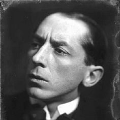
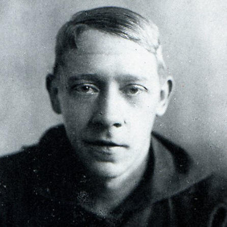
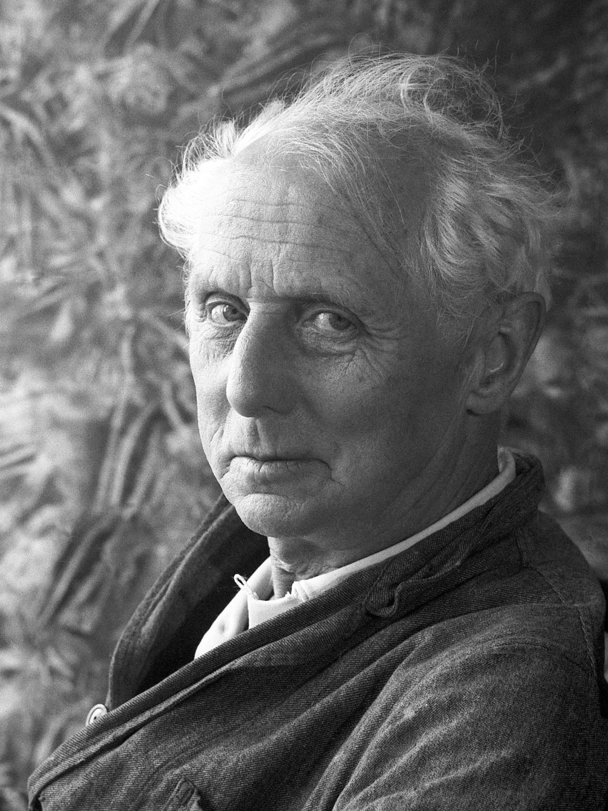

Кликните на кнопку "подробнее", чтобы перейти на страницу направления.
Экспрессионизм
Мировоззренческой основой экспрессионизма стал индивидуалистический протест против
уродливого мира, все большее отчуждение человека от мира, чувства бесприютности, крушения, распада
тех начал, на которых, казалось, так прочно покоилась европейская культура. Экспрессионистам
свойственны тяготение к мистике и пессимизм.
Художники

Э. Мунк
Э. Кирхнер
Галерея работ
Абстракционизм
Направление в искусстве, использующее в качестве принципа отказ от
изображения реальных предметов в живописи, скульптуре и графике, освобождение слова
от ассоциации в литературе.
Художники

К. Малевич

В. Кандинский
Галерея работ
Кубизм
В основе кубизма лежит стремление художника разложить изображаемый трёхмерный
объект на простые элементы и собрать его на холсте в двумерном изображении. Таким образом,
художнику удаётся изобразить объект одновременно с разных сторон и подчеркнуть свойства,
невидимые при классическом изображении объекта с одной стороны.
Художники

П. Пикассо

Ж. Брак
Галерея работ
Лучизм
Смыслом живописи основатель лучизма Михаил Ларионов объявил не изображение предметов,
а иллюстрирование отражённых от них цветовых лучей, что, по мнению автора, в большей мере близко к
тому, как предметы видятся глазу[3]. То есть, согласно теории, иллюстрация приближается к
«символической плоскости» картины. Лучизм стирает границы, существующие между натурой и
картинной плоскостью.
Художники

М. Ларионов
Н. Гончарова
Галерея работ
Футуризм
Футуризм отталкивался от фовизма, заимствуя у него цветовые находки и исходную идею,
от кубизма, у которого перенял художественные формы, однако отвергал кубический анализ (разложение)
как выражение сущности явления и стремился к непосредственному эмоциональному выражению динамики
современного мира.
Художники

У. Боччони

Д. Балла
Галерея работ
Примитивизм
Включает в себя обдуманное упрощение картины, которое делает её формы примитивными,
как творчество ребёнка или рисунки первобытных времён. Примитивизм возникает как в рамках профессионалов,
так и среди художников-непрофессионалов.
Художники

А. Руссо

Н. Пиросмани
Галерея работ
Конструктивизм
Главной особенностью данного стиля является строгий геометризм, геометрические формы,
точная прорисовка, ровные линии, лаконичность и монолитность всего произведения в целом.
Конструктивизм в живописи можно назвать данью эпохи конструктивизма в архитектуре.
Художники

А. Родченко

В. Татлин
Галерея работ
Дадаизм
В изобразительном искусстве наиболее распространённой формой творчества дадаистов
был коллаж — технический приём создания произведения из определённым образом скомпонованных и
наклеенных на плоскую основу (холст, картон, бумагу) кусочков разнообразных материалов: бумаги,
ткани и т. д. В дадаизме можно выделить три ветви развития коллажа: цюрихский «случайный» коллаж,
берлинский манифестационный коллаж и кёльнско-ганноверский поэтический коллаж.
Художники
Ж. Арп

М. Эрнст
Галерея работ
Сюрреализм
Течение в авангардном искусстве первой половины двадцатого века, характеризуемое
слиянием реальности с чем-то другим, но не оппозиционным. Сюрреализм — это сон — он не реальный,
но и не ирреальный. Для стиля характерны аллюзии и парадоксальное сочетание форм, визуальный обман.
Художники
С. Дали

Р. Магритт
Галерея работ
Поп-арт
Направление в изобразительном искусстве Западной Европы и США конца 1950—1960-х годов,
возникшее как реакция отрицания на абстрактный экспрессионизм. В качестве основного предмета и образа
поп-арт использовал образы продуктов потребления. Фактически это направление в искусстве подменило
традиционное изобразительное творчество — на демонстрацию тех или иных объектов массовой культуры
или вещественного мира.
Художники
Э. Уорхол

Р. Лихтенштейн
Галерея работ